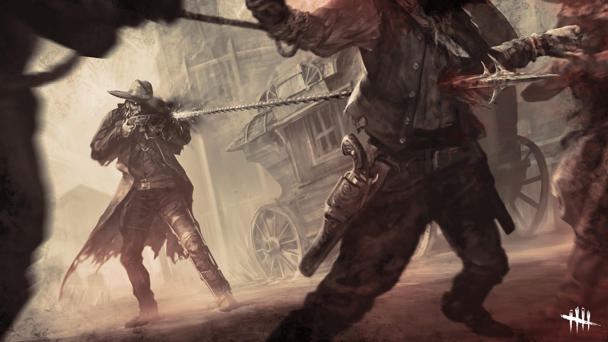

NOTICIAS
¡En esta seccion vas a encontrar las ultimas noticias!
¡EL NUEVO CAPITULO ESTA DISPONIBLE!
El capítulo incluye un nuevo mapa, el Salon del Hombre Muerto. Un asesino, el Arponero, y una sobreviviente, Zarina Kassir.

Chains of Hate es un capítulo completamente nuevo, que incluye un nuevo mapa, el Salon del Hombre Muerto, en la ciudad fantasma de Glenvale. La compra del contenido descargable Chains of Hate desbloqueará su asesino y su sobreviviente.
El asesino
El Arponero, un ex cazarrecompensas es el nuevo asesino. Después de la masacre de quienes lo habían traicionado en la Penitenciaría de Hellshire, el Arponero fue atraído al Reino de la Entidad, donde ahora usa su invento único, un rifle que dispara una cadena, para reunir a los sobrevivientes para La Entidad.
La sobreviviente
La nueva sobreviviente es Zarina Kassir, una vaquera moderna que usa su cámara y sus habilidades cinematográficas para ayudar a quienes no pueden ayudarse a sí mismos. Mientras investigaba las circunstancias en torno a la "Masacre de Mad Mick" en la prisión de Hellshire, desentrañó más de lo que esperaba.

¿CÓMO SOLUCIONAR EL ERROR DE CONEXIÓN AL INICIAR SESIÓN?
Hasta ahora no ha habido una solución oficial, pero hay algunas soluciones caseras:
Reiniciar Dead by Daylight
Muchos jugadores, cuando se enfrentan a algún problema, lo primero que hacen es reiniciar el juego. Este método ha sido bastante eficaz para solucionar problemas. Reiniciar el juego mataría cualquier proceso no deseado.
Verificar la conexión a Internet, reduzca la carga de conexión
Otro motivo de este error podría ser su conexión a Internet. Podría deberse a una conectividad débil e
inestable. Reiniciar su enrutador ayudará a retener la intensidad de la señal.
La otra
cosa que puede hacer es reducir la carga del enrutador. Intente desconectar el WIFI de los dispositivos
inactivos para reducir la carga de datos.